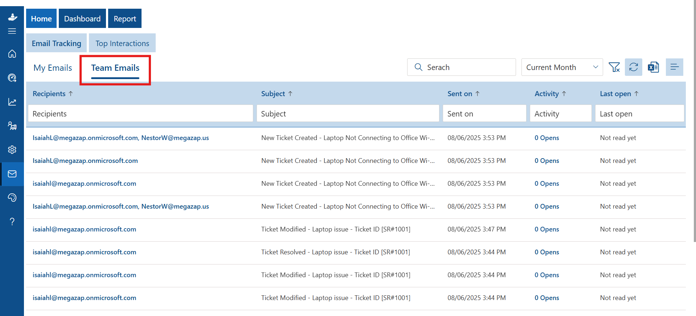

Intregration
From here you can Integrate helpdesk application with other application.

- Click the "Add" button, enter your phone number, and select your business hours.
Phone
Admin can add contact numbers (helpline numbers) of different departments or teams. The Users can find the contact number by clicking on the phone icon which is located on the right side of the home page.

- A new tab named Agentic Tickets will appear on the homepage. This tab includes Draft, Open, Resolved, and Closed sections.
-
Ticket lifecycle:
- Draft — Newly created tickets through Agentic Tickets appear here by default.
- Open — When the ticket is opened from the comment page, it moves to Open.
- Resolved — If the ticket is resolved by AI, it moves to Resolved.
- Closed — If the ticket is closed by AI or through auto-close, it moves to Closed.
Agentic Ticket
The Agentic Tickets feature uses AI to handle ticket replies. It becomes active when either the AI or Co-pilot toggle is enabled in the Integration section. The feature only applies to the teams that are selected.


Note: Unlike other tabs, the Agentic Tickets tab does not display ticket counts.
Helpdesk Mailbox
From here you can provide access to view the ticket mailbox tab of the home page for the manager role person. You can add manager from users. You can delete the mailbox manager in case using the delete button in case you are to remove the access.
To know more about powerautomate configuration please click here
If the Power automate flow is configured in your HR365 Helpdesk application with your support mailbox ID you will be able to send all the emails through power automate.
1. Select Helpdesk Mailbox from the integrations section of the settings page.

2. Turn on the toggle to enable the setting.

3. You will see one Message box.

4. Press Ok to enable the setting.

It would send all the emails through power automate or through mailto:no-reply@sharepoint.com.
Mailbox Manager: This is an add-on role and it enables view 'ticket mailbox' tab on homepage.You can select manager from the mailbox manager dropdown.
- • Ensure that both Asset Management 365 and Xdesk 365 applications are installed in the same SharePoint site location.
- • Xdesk 365: https://YourTenant.sharepoint.com/sites/SiteName/SitePages/Helpdesk.aspx
- • Asset Management 365: https://YourTenant.sharepoint.com/sites/SiteName/SitePages/AssetManagement.aspx
- • https://YourTenant.sharepoint.com/SitePages/Helpdesk.aspx
- • https://YourTenant.sharepoint.com/SitePages/AssetManagement.aspx
- • Verify Installation Location:
- o Ensure both applications are installed within the same SharePoint site, as per the prerequisites above.
- • Enable Integration in Xdesk 365:
- o Open the Xdesk 365 application.
- o Navigate to Settings.
- o Locate the Integration toggle (as shown in the screenshot).
- o Enable the toggle to activate integration with Asset Management 365.
- • Assign & Manage Assets
- o Open the Asset Management 365 application on the same site.
- o Add a new asset or assign an asset to a user.
- • Viewing Assigned Assets
- o Once integration is successfully completed, a new section labeled "Assets Assigned" will be available on the ticket comment page.
- o This section will display a list of all assets assigned to the user.
- o Users can easily view details of each assigned asset.
- • Viewing Asset Details
- o Click on the Asset ID in the "Assets Assigned" section.
- o This will open a detailed asset view, displaying all relevant information about the asset.
Integrating Asset Management 365 with Xdesk 365
- Prerequisites
- Site Collection URLs
- Root Site URLs
- Integration Steps

Azure Open AI Integration
Azure OpenAI empowers Xdesk 365 with intelligent automation by analyzing tickets, emails, and customer queries in real time. It extracts key information, categorizes requests, suggests responses, and streamlines resolution workflows — enabling faster, more accurate, and efficient service desk operations.
To enable this functionality, navigate to Integration and open the Azure Open AI Integration panel.
Inside the panel, configure the following options for Azure OpenAI:
- Azure Open AI Integration — Use the toggle to turn AI integration On or Off.
- Azure AI Endpoint — The REST API or service endpoint hosted on Microsoft Azure.
- Azure AI API Key — Authentication token required for secure connection with Azure AI services.
- Azure AI Deployment Name — Identifier of the deployed AI model in your Azure resource.
To learn how to generate and retrieve your Endpoint, API Key, and Deployment Name refer this Guide: Configure Azure AI.
After entering the required details, click Save to activate the integration.
Copilot Integration
Use this toggle to enable or disable Copilot integration. Enter the configured Power Automate (PA) URL and click Save to activate the feature.

To integrate Copilot with Xdesk 365, begin by creating your Copilot agent in Copilot Studio.
Ensure that you have a Premium Power Automate license to proceed with the configuration.
In the left-hand sidebar, select Agents.

If you don’t already have an agent, click on + New Agent to create one, then configure it as required.

If you already have an existing agent, simply click on that agent to open it.
In the Knowledge section, add your Knowledge Base.

Then go to Settings. Under Security, select Web Channel Security and copy the Secret 1 key.


Next, in Power Automate, go to My Flows and import the Copilot server solution.

Open the flow and click Edit.

Disable the New Designer toggle and paste the previously copied Secret 1 value into the Headers field.
Save the flow and copy the HTTP GET URL generated under the When an HTTP request is received trigger.

Return to the application, enable the Copilot integration toggle, and paste this URL into the configuration field.

Once configured, Copilot will appear on the Comment page.

When you click on Helpdesk Copilot, the Copilot section will be displayed, where you can enter your questions.
Copilot will then be ready to assist you, and you can access it from the function bar.

Integrate Microsoft Form with Helpdesk
Clone the template in MS From using below given link. Note: This feature works on
Power Automate setup. Contact appsupport@hr365.us or your Office365 admin for the
help. https://kb.hr365.us/InternalUsersM365Users/
https://kb.hr365.us/msformexternal/

Integrating Mail Tracker with Xdesk 365
The Mail Tracker module provides visibility into email communication within the Xdesk 365 environment. This includes task reminders and notifications sent to users, improving transparency and tracking.
When the "Integrate Microsoft Form with Helpdesk" toggle is enabled in Xdesk 365 settings, the Mail Tracker option becomes visible in the left navigation panel.

From the home screen, users can view My Emails to track which emails they have sent or received through the Helpdesk system. This view includes delivery status, read receipts, and time logs.

The Team Emails view displays mail activities related to the user’s assigned teams or groups. It supports better coordination and transparency by showing team-wide email tracking data.
The Top Interactions section highlights the users with the highest number of email engagements — such as most emails sent, received — within a given period. This helps identify active participants and engagement trends.

Clicking on a specific user or email record allows you to view detailed interaction logs, including email open time, IP address, device info, browser, and location.
The Dashboard in Email Tracker offers a concise overview of email productivity, including sent and received email counts, recipients, senders, open rates, and activity trends. Filters help you view data by user or team, making it easier to analyze communication performance over time.

The Report tab displays detailed click tracking for each email, showing recipient activity including subject, URL clicked, timestamps for first and last clicks, and total interactions. This helps monitor user engagement at a granular level.
- 1. In the DevOps Integration page, you’ll see a toggle button for DevOps Integration.
- 2.Turn on this toggle to enable the integration.
- 1. After enabling the integration, you’ll need to
provide some information:
- o DevOps Organization Name: This is the name of your DevOps account or organization.
- o Personal Access Token: This is a key that allows Xdesk 365 to connect securely to your DevOps account.
- o Column Mapping: You’ll select which columns should map to the project and work item type.
- 1. To find your DevOps Organization Name, log into your DevOps account.
- 2. The organization name will typically appear at the top of your DevOps dashboard or in the account settings.
- 1. Log into your DevOps account.
- 2. Navigate to Security or Personal Access Tokens in the settings.
- 3. Here, you’ll find or create a Personal Access Token that will allow Xdesk 365 to communicate with DevOps.
- 1. If you don't already have a token, click the "New Token" button in your DevOps account.
- 2. Fill in the required details like token name and expiration date (you can leave most options as default).
- 3. Click on the "Create" button to generate a new token.
- 1. Once the token is generated, you’ll see a long string of characters. Copy this token.
- 2. Go back to Xdesk 365 and paste the token value into the Personal Access Token text field under the DevOps Integration settings.
- 3. Click on the "Create" button to generate a new token.
- 1. To retrieve the list of projects and work item types, go to your DevOps account.
- 2. Check the available projects and work item types in the DevOps dashboard.
- 1. After entering the required information, make sure that all of your projects and work item types are listed under the selected columns.
- 2. This is where you map which projects and work items from DevOps will be visible in Xdesk 365.
- 1. In Xdesk 365, create a new support ticket.
- 2. When creating the ticket, you will see options to select a project and work item type under the selected columns.
- 3. Choose a project and work item type from the available options.
- 1. After you’ve created the ticket, go to the ticket comments section.
- 2. You will see an option called "Add Work Item in DevOps" in the ticket description field.
- 3. Click this option to create a new work item in your DevOps account linked to the ticket.
- 1. Once the work item is created, a unique ID will be generated for it.
- 2. You can view this ID and other work item details in the ticket description field.
- 3. To verify, simply check your DevOps account using the work item ID.
DevOps Integrations
The DevOps Integration feature allows seamless creation of tickets and tasks directly within Azure DevOps. This functionality enables teams to manage their DevOps boards and Xdesk 365 in a synchronized manner. By linking these two platforms, issues reported through Xdesk 365 can be converted into actionable tasks in Azure DevOps. This streamlines workflows, enhances collaboration, and ensures that all tasks and incidents are tracked and addressed efficiently without duplicating efforts.
- Enable DevOps Integration

- Enter DevOps Details
- Retrieve Your DevOps Organization Name

- Retrieve Your Personal Access Token in DevOps

- Generate a New Token

- Copy and Paste the Token

- Retrieve Projects and Work Item Types in DevOps

- Add Projects and Work Item Types


- Create a New Ticket
- Add Work Item in DevOps


- Verify the Work Item

By following these steps, you have successfully integrated DevOps with Xdesk 365! If you encounter any issues during the process, please feel free to reach out to our support team.